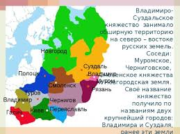
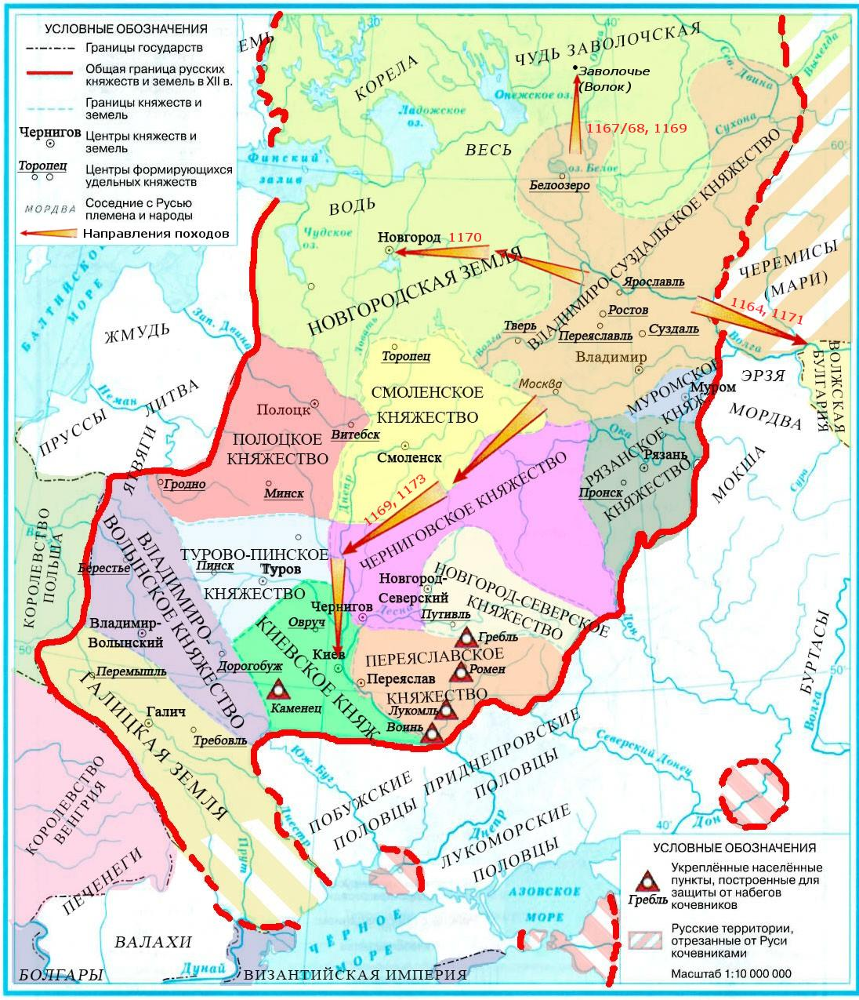
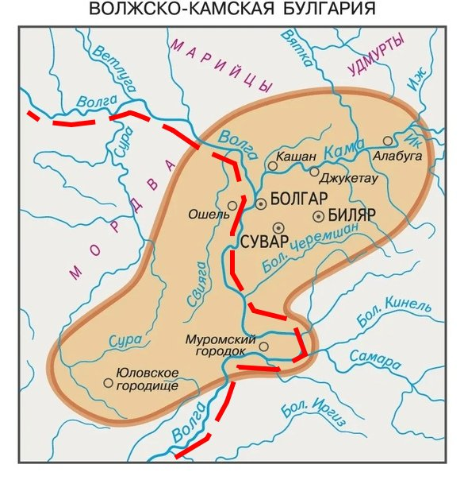
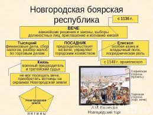
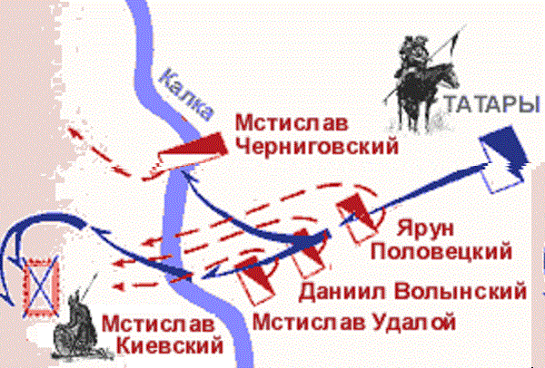
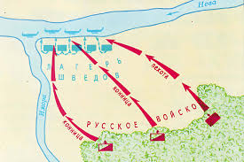
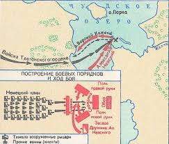

Материал для подготовки
Князь Рюрик
Князь Рюрик был первым князем Руси, начав княжить в 862 году!
Согласно "Повести временных лет", он был призван на княжение ильменскими словенами, кривичами, чудью и
весью для прекращения междоусобиц.
Рюрик стал основателем династии Рюриковичей, правившей Русью до конца XVI века.
После смерти своих братьев Синеуса и Трувора Рюрик объединил северные земли под своей властью с центром в
Новгороде.
Его преемником стал Олег Вещий, который правил от имени малолетнего сына Рюрика — Игоря.
Некоторые даты
862 - призвание варягов и вот картинка, связанная с этим событием!

Олег Вещий
Олег Вещий был вторым князем на Руси, который объединил Киев и Новгород.
В 882 году он захватил Киев, убив Аскольда и Дира, и сделал его столицей Древнерусского государства,
сказав: "Да будет Киев матерью городов русских".
Олег подчинил древлян, северян и радимичей, освободив их от дани Хазарскому каганату.
Также совершил успешные походы на Византию (Константинополь/Царьград).
По преданию, в знак победы Олег прибил свой щит к вратам Царьграда.
Умер в 912 году от укуса змеи, выползшей из черепа его умершего коня — так гласит легенда, изложенная
Пушкиным в "Песне о вещем Олеге".
Некоторые даты
882 - захват Киева Олегом Вещим
907, 911 - Походы князя Олега на Константинополь,
заключение выгодных торговых договоров с Византией.

Игорь Старый
Игорь Старый получил свою власть после смерти Олега в 912 году.
Совершал походы на печенегов и также на Царьград.
Был убит древлянами в 945 году за попытку повторно собрать дань.
Игорь подавил восстание древлян в 914 году.
Поход на печенегов в 920 году.
Первый поход на Византию в 941 году и второй поход на Византию в 944 году.
И также интересно вот что:
941 год: Первый поход на Царьград (Византию). Закончился поражением: русский флот был сожжён «греческим
огнём».
- 944 год: Второй поход на Византию. Был более подготовленным, но завершился заключением мирного
договора на менее выгодных условиях, чем при Олеге.
- После смерти Игоря правила его жена — княгиня Ольга, так как их сыну Святославу было всего 3 года.
944 год: Второй поход на Византию
941 год: Первый поход на Царьград (Византию)
914 год: Подавление восстания древлян
920 год: Поход на печенегов

Княгиня Ольга
Княгиня Ольга правила Русью с 945 по 960 год после смерти мужа Игоря.
Она жестоко отомстила древлянам за убийство мужа: сожгла их столицу Искоростень с помощью птиц, к которым
велела привязать горящую паклю.
В 957 году Ольга приняла христианство в Константинополе, став первой правительницей Руси, крестившейся
лично (задолго до массового крещения).
Установила чёткую форму дани — УРОКИ.
И места сбора дани — ПОГОСТЫ.
Эти реформы упорядочили сбор налогов и укрепили центральную власть.
Позднее была канонизирована Русской православной церковью как святая равноапостольная княгиня Ольга.

Святослав Воитель
Святослав Игоревич правил с 960 по 972 год и прославился как князь-воин.
Перед битвой он посылал врагам предупреждение: "Иду на Вы!"
Устраивал походы на:
- Вятичей — подчинил их в 964-966 годах
- Хазарский каганат — разгромил его в 965-969 годах, каганат перестал существовать как сильное
государство
- Волжскую Булгарию и Кавказ — 965-968 годы
- Дунайскую Болгарию — 968-971 годы, хотел перенести столицу в Переяславец на Дунае
В 971 году потерпел поражение от византийского императора Иоанна Цимисхия и был вынужден заключить мир.
Погиб в 972 году при возвращении в Киев — его убили печенеги у днепровских порогов. Из его черепа
печенежский хан Куря сделал чашу для пиров.
Можно понять, что это он по сердечку воевал!

Владимир Святой
Владимир Святославич правил с 978 по 1015 год.
Главное, что он сделал — это Крещение Руси в 988 году.
До крещения Владимир был ярым язычником, провёл языческую реформу, установив пантеон богов во главе с
Перуном.
Выбор веры: по легенде, Владимир выслушал послов от ислама, иудаизма, западного и восточного христианства и
выбрал православие из-за красоты службы в Софийском соборе Константинополя.
Вот что он делал ещё:
- Укрепление границ (981–990-е): Подчинение вятичей и радимичей, вернувшихся под власть Киева.
- Западное направление (981): Завоевание Червенских городов (Червен, Перемышль) у Польши.
- Борьба с кочевниками: Походы против ятвягов, радимичей, волжских булгар и печенегов.
- Строительство оборонительных рубежей на юге — "Змиевы валы" для защиты от печенегов.
- Поход на Корсунь (988): Захват византийского города Херсонеса в Крыму, что стало ключевым условием
для крещения князя и брака с Анной, сестрой византийских императоров.
- Хазарский поход (985): Ослабление Хазарского каганата.
- Крещение Руси (988): Сделал христианство государственной религией, способствуя объединению земель и
повышению международного авторитета Руси.
- Строительство Десятинной церкви (996): Первая каменная церковь на Руси, ставшая центром культуры. На
её содержание выделялась десятая часть княжеских доходов.

Ярослав Мудрый
Ярослав Владимирович правил с 1019 по 1054 год и сделал очень много для Руси!
Пришёл к власти после ожесточённой междоусобной войны с братом Святополком Окаянным, в которой погибли их
братья Борис и Глеб (первые русские святые).
Военные походы:
- 1030–1031 гг.: Поход на Польшу совместно с братом Мстиславом, возвращение Червенских городов.
- 1030 г.: Поход на чудь (прибалтийские племена), основание города Юрьев (ныне Тарту, Эстония).
- 1036 г.: Окончательный разгром печенегов под Киевом, прекращение их набегов на Русь. В честь этой
победы построен Софийский собор в Киеве.
- 1038–1047 гг.: Успешные походы против ятвягов, мазовшан и других племён.
- 1043 г.: Последний поход Руси на Византию (неудачный), завершившийся мирным договором в 1046 году.
Также его реформы!
- Законодательство: Создал «Правду Ярослава» — древнейшую часть «Русской Правды», регулировавшую
правовые отношения. Ограничивал кровную месть, вводил штрафы за преступления.
- Культура и строительство: Построил Софийский собор в Киеве (1037) и Новгороде, возвёл Золотые ворота
в Киеве.
- Просвещение: Открыл училище для детей (300 человек обучались в Новгороде), собирал и переводил книги
с греческого, основал первую библиотеку на Руси в Софийском соборе.
- Дипломатия: Укрепил международный авторитет через «семейную дипломатию» — династические браки детей с
правителями Швеции, Византии, Германии, Венгрии, Польши и Франции. Его дочь Анна стала королевой
Франции.
- Церковь: Установил церковную иерархию, поставив первого русского митрополита Илариона без согласия
Константинополя (1051 год).
Время Ярослава Мудрого считается расцветом Киевской Руси.

Наследники Ярослава Мудрого
После смерти Ярослава Мудрого в 1054 году Русь была разделена между его сыновьями согласно лествичной
системе наследования.
Триумвират Ярославичей (Изяслав, Святослав, Всеволод) пытался сохранить единство, но междоусобицы
усиливались.
Очень важные даты:
- 1072 г. — создание «Правды Ярославичей» (дополнение к «Русской Правде»), защита княжеского имущества.
- 1097 г. — Любечский съезд князей, на котором было сказано: "Да пусть каждый держит отчину свою". Это
закрепило раздробленность Руси юридически.
Итоги:
- Начался упадок Руси и переход к раздробленности.
- Государство ослабляли княжеские усобицы.
- Усиление натиска кочевников (половцев) на южные пределы страны.
- Был принят новый свод законов — «Правда Ярославичей».
- Свои противоречия Рюриковичи старались решить на съездах, но часто решения нарушались.
Русь при Владимире Мономахе
Владимир Всеволодович Мономах правил с 1113 по 1125 год и стал последним князем, которому удалось на время
восстановить единство Руси.
Был призван на киевский престол после восстания 1113 года в Киеве (народ громил дома ростовщиков).
Даты и его походы:
- 1080–1081 гг.: Походы против вятичей, непокорных киевской власти.
- 1076 г.: Богемский поход (помощь полякам против чехов).
- 1077–1078 гг.: Походы на Полоцк (против Всеслава Полоцкого).
- 1095–1097 гг.: Участие в съездах князей (Любечский съезд 1097 г.), целью которых было прекращение
междоусобиц и объединение против внешнего врага.
- 1103 г.: Долобский съезд и победоносный поход на половцев (битва на реке Сутень).
- 1107 г.: Разгром ханов Боняка и Шарукана.
- 1111 г.: «Крестовый поход» в глубь половецкой степи, битва при Сальнице, ставшая решающей для
обеспечения безопасности границ Руси от половцев.
Реформы и законодательная деятельность:
- «Устав Владимира Всеволодовича» (Устав о резах): Свод законов, который вошёл в «Русскую Правду». Он
ограничивал проценты по займам (резам), облегчая положение должников и предотвращая долговое
рабство, что успокоило народ после восстания 1113 года.
- Усиление княжеской власти: Жёстко подавлял неповиновение удельных князей, восстановив единство
Киевской Руси на время своего правления.
- Упорядочение судопроизводства: Разграничение светских и церковных судов.
Достижения и наследие:
- Остановка половецкой угрозы: Активными наступательными действиями обезопасил южные границы Руси.
- Объединение Руси: Своим авторитетом прекратил междоусобицы и подчинил большинство князей, укрепив
Киевский престол.
- Культурное наследие: Написал знаменитое «Поучение Владимира Мономаха» — литературный памятник,
содержащий наставления потомкам («не ленитесь», «чтите старших», «не давайте отрокам причинять
вред»).
- Восстановление экономического порядка: Ограничение ростовщичества помогло восстановить доверие к
власти.
Карта походов

РУССКИЕ ЗЕМЛИ В СЕРЕДИНЕ XII - начале XIII В.
ПОЛИТИЧЕСКАЯ РАЗДРОБЛЕННОСТЬ РУСИ (1132–1185 гг.)
Причины раздробленности
- Лествичная система наследования — запутанный порядок передачи престола (не от отца к сыну, а к
старшему в роду), что вызывало постоянные усобицы между князьями.
- Рост крупного вотчинного землевладения — бояре и князья богатели, опирались на собственные земли и не
нуждались в сильной центральной власти Киева.
- Натуральный характер хозяйства — каждая земля сама себя обеспечивала, торговля между регионами была
слабой, экономического единства не было.
- Ослабление внешней угрозы — после разгрома печенегов и временного затишья со стороны половцев,
потребность в едином военном руководстве снизилась.
- Решения Любечского съезда 1097 г. — "Да пусть каждый держит отчину свою" — юридически закрепили
разделение земель между ветвями рода Рюриковичей.
- Упадок пути "из варяг в греки" — снижение значения торгового пути подорвало экономическую мощь Киева
как центра объединения.
Особенности раздробленности:
- Носит на Руси характер не распада, а именно раздробленности — государство формально продолжало
существовать, но власть киевского князя стала номинальной.
- Единая вера и культура — несмотря на политическое разделение, сохранялось духовное единство
(православие, язык, летописание).
- Княжеские усобицы — постоянная борьба за киевский престол и за расширение своих уделов.
- Появление новых политических центров — возвышение Владимиро-Суздальского, Галицко-Волынского княжеств
и Новгородской республики.
- Половецкая угроза сохраняется — кочевники продолжают набеги, но уже нет единого отпора.
Последствия раздробленности:
Положительные
- Расцвет городов и развитие ремёсел, торговли в отдельных землях.
- Подъём культуры: строительство храмов, развитие летописания в разных регионах.
- Формирование местных школ зодчества, иконописи.
Отрицательные
- Ослабление обороноспособности Руси перед внешними врагами (половцы, а позже монголы).
- Постоянные междоусобные войны, разорение земель.
- Снижение международного авторитета Руси.
Наиболее влиятельные русские земли:
Владимиро-Суздальское княжество (Северо-Восточная Русь):
- Правители: Юрий Долгорукий (1125–1157), Андрей Боголюбский (1157–1174), Всеволод Большое Гнездо
(1176–1212).
- Особенности: сильная княжеская власть, активное освоение новых земель, рост городов (Владимир,
Суздаль, Ростов).
- Дата: 1147 г. — первое упоминание Москвы в летописи (Юрий Долгорукий).
Новгородская республика (Северо-Западная Русь):
- Особенности: боярская республика, высший орган — вече (народное собрание), князя приглашали и могли
изгнать.
- Основные должности: посадник (управление), тысяцкий (налоги и торговля), архиепископ (церковь и
казна).
- Развитая торговля с Европой (Ганзейский союз).
Галицко-Волынское княжество (Юго-Западная Русь):
- Правители: Ярослав Осмомысл (1153–1187), Роман Мстиславич (1199–1205), Даниил Романович (1238–1264).
- Особенности: мощное боярство, которое боролось с княжеской властью, плодородные земли, торговля с
Европой.
ВЛАДИМИРО-СУЗДАЛЬСКАЯ ЗЕМЛЯ
Общая характеристика:
- Расположение: Северо-Восточная Русь, междуречье Оки и Волги (Залесский край).
- Природные условия: густые леса, плодородные почвы (ополья), много рек — хорошо для земледелия и
обороны.
- Особенность власти: сильная княжеская власть, боярство слабее, чем в других землях (меньше вотчинных
традиций, города моложе).
- Освоение земель: князья активно привлекали переселенцев, строили новые города.
- Основные города: Ростов, Суздаль, Владимир-на-Клязьме, позже — Москва, Переяславль-Залесский,
Юрьев-Польский, Дмитров.
Особенности развития:
- Князья основывали новые города и давали им льготы, усиливая свою власть.
- Слабость вечевых традиций по сравнению с Новгородом или Киевом.
- Князь считался верховным собственником всей земли, бояре получали землю за службу.
- Активная внешняя политика: борьба с Волжской Булгарией, походы на Новгород и Киев, освоение северных
территорий.
Картинка расположения

ЮРИЙ ДОЛГОРУКИЙ (1125–1157)
Немножечко информации о нём
- Сын Владимира Мономаха, получил Ростово-Суздальскую землю в 1125 году.
- Прозвище «Долгорукий» получил за стремление тянуть руки к чужим землям (особенно к Киеву).
- Всю жизнь боролся за киевский престол, трижды захватывал Киев.
- Основатель новых городов: Дмитров, Юрьев-Польский, Переяславль-Залесский.
- 1147 год — первое летописное упоминание Москвы! Юрий Долгорукий дал пир своему союзнику Святославу
Ольговичу: «Приди ко мне, брате, в Москов».
- Умер в 1157 году в Киеве (по легенде — отравлен боярами).
Также его походы!
- 1111 г.: Участие в походе против половцев под руководством Владимира Мономаха.
- 1120 г.: Самостоятельный поход на Волжскую Булгарию, завершившийся победой.
- 1147 г.: Поход во владения новгород-северского князя Святослава Ольговича, первое летописное
упоминание Москвы.
- 1149-1151 гг.: Борьба за Киев. Захват Киева (1149), неудачные попытки удержать его против Изяслава
Мстиславича, бегство (1150, 1151).
- 1152 г.: Поход на Чернигов против Изяслава Давыдовича, неудачная осада.
- 1155 г.: Союз с половцами, поход на Киев и вторичное овладение престолом.
АНДРЕЙ БОГОЛЮБСКИЙ (1157–1174)
О нём
- Сын Юрия Долгорукого, но в отличие от отца не стремился в Киев.
- В 1155 году самовольно покинул Вышгород (под Киевом) и уехал в Суздаль, забрав с собой чудотворную
икону Богоматери (позже — Владимирская икона Божией Матери).
- Перенёс столицу во Владимир-на-Клязьме, сделав его политическим центром Руси.
- Построил Успенский собор, Золотые ворота во Владимире, церковь Покрова на Нерли (шедевр
древнерусского зодчества), замок в Боголюбово.
- 1169 год — взял и разграбил Киев, но не остался там княжить (показал, что Киев утратил статус
главного города Руси).
- Провозгласил себя «великим князем Владимирским», подчинял соседних князей.
- 1174 год — убит боярами-заговорщиками в своём замке Боголюбово (бояре были недовольны усилением
единоличной власти).
Итоги правления
- Превратил Владимир в новый политический центр Руси.
- Установил жёсткую княжескую власть (самовластие), что вызвало недовольство бояр.
- Внёс огромный вклад в культуру и архитектуру.

ВСЕВОЛОД БОЛЬШОЕ ГНЕЗДО (1176–1212)
О нём
- Младший сын Юрия Долгорукого, брат Андрея Боголюбского.
- Прозвище «Большое Гнездо» — из-за многодетности (имел 8 сыновей и 4 дочерей).
- При нём Владимиро-Суздальское княжество достигло наивысшего расцвета!
- Укрепил княжескую власть: подавил мятежных бояр, расправился с заговорщиками, убившими его брата
Андрея.
- Активная внешняя политика: ходил на Волжскую Булгарию, вмешивался в дела Новгорода, Киева, подчинял
рязанских князей.
- Автор «Слова о полку Игореве» называет его самым могущественным князем Руси: «Ты можешь Волгу вёслами
расплескать, а Дон шеломами вычерпать».
- При нём строились: Дмитровский собор во Владимире (резьба по камню), Успенский собор расширен.
- После его смерти в 1212 году начался новый виток усобиц между его сыновьями.
Итоги правления
- Владимиро-Суздальское княжество — сильнейшее на Руси.
- Власть князя стала практически неограниченной.
- Завершил строительство Владимира как главного центра Северо-Восточной Руси.

НОВГОРОДСКАЯ ЗЕМЛЯ (РЕСПУБЛИКА)
1136 год — установление Новгородской республики:
- В 1136 году новгородцы изгнали князя Всеволода Мстиславича: «Ты еси не бережешь смердов, бежишь с
поля битвы, зачем ты у нас?».
- С этого момента Новгород стал республикой — князя приглашали по договору и могли изгнать в любой
момент.
- Это единственная боярская республика на Руси!

Территория и население:
Территория:
- Северо-Западная Русь: от Финского залива до Уральских гор, от Северного Ледовитого океана до
верховьев Волги.
- Огромные владения, но слабо заселённые.
- Делилась на пятины (пять административных районов) и волости.
Население:
- Бояре — крупные землевладельцы, владели вотчинами, занимали высшие должности.
- Житьи люди — средние землевладельцы, торговцы.
- Купечество — объединялось в гильдии (например, «Ивановское сто» — купцы, торгующие воском).
- Чёрные люди — ремесленники, мелкие торговцы, свободные крестьяне-общинники.
- Смерды — зависимые крестьяне.
- Холопы — рабы (их было немного).
Развитие экономики:
Торговля:
- Ключевое расположение на пути «из варяг в греки» и на Волжском торговом пути.
- Активная торговля с Европой через Балтийское море.
- Союз с Ганзейским союзом (объединение немецких купцов), в Новгороде был Ганзейский торговый двор.
- Экспорт: меха (соболь, куница, белка), воск, мёд, лён, кожи, лес.
- Импорт: сукно, вина, металлы, оружие, предметы роскоши.
Ремесло:
- Высокий уровень кузнечного, ювелирного, кожевенного, деревообрабатывающего дела.
- Новгородские ремесленники славились по всей Руси.
Сельское хозяйство:
- Из-за сурового климата земледелие развито слабо, хлеб завозили из Владимиро-Суздальской земли
(Низовские земли).
Промыслы:
- Охота, рыболовство, бортничество (лесной мёд диких пчёл), солеварение — важные источники дохода.
Вечевые традиции Новгорода:
Вече — народное собрание всех свободных граждан мужского пола.
- Созывалось по звону вечевого колокола на Ярославовом дворище (торговая сторона) или у Софийского
собора.
- Решения принимались криком (кто громче перекричит), иногда дело доходило до драк между разными
группировками.
- Вече решало вопросы войны и мира, приглашения и изгнания князя, избрания должностных лиц.
Схема управления
ГАЛИЦКО-ВОЛЫНСКАЯ ЗЕМЛЯ (ЮГО-ЗАПАДНАЯ РУСЬ)
Юго-Западная Русь — это Галицкое и Волынское княжества, которые позже объединились в одно из сильнейших
государств периода раздробленности.
- Расположение: юго-западные земли Руси, Карпаты и плодородные долины рек Днестр, Прут, Западный Буг.
- Природные условия: мягкий климат, чернозёмные почвы — идеально для земледелия. Много соляных
месторождений.
- Особенность: очень сильное боярство, которое постоянно боролось за власть с князьями.
- Активная торговля с Византией, Венгрией, Польшей, Чехией.
Основание Галицкой земли (1144 год)
В 1144 году князь Владимир Володаревич объединил несколько уделов вокруг Звенигорода, Перемышля и Теребовли
в единое Галицкое княжество со столицей в Галиче.
Он не зависел от Киева и проводил самостоятельную политику. С этого момента Галич становится центром
сильного княжества.
Княжение Ярослава Осмомысла в Галицкой земле (1153–1187)
Ярослав Владимирович, прозванный Осмомыслом (то есть «восемь мыслей» — очень умный), правил 34 года. При
нём Галицкое княжество достигло наивысшего расцвета.
- Укрепил границы, успешно воевал с половцами.
- Вмешивался в дела соседних княжеств (Киев, Волынь).
- Расширил территорию княжества до устья Дуная.
- Поддерживал мирные отношения с Венгрией, Польшей, Византией.
- В «Слове о полку Игореве» о нём сказано: «Ты высоко сидишь на своём златокованом престоле, подпёр
горы Угорские своими железными полками, затворив Дунаю ворота».
- Однако против него выступало могущественное галицкое боярство, которое вмешивалось даже в личную
жизнь князя.
Итоги: При Ярославе Осмомысле Галич стал одним из сильнейших политических и экономических центров Руси.
Княжение Владимира Ярославича (1187–1199)
После смерти Ярослава Осмомысла престол занял его сын Владимир. Но он был слабым правителем, не имел
авторитета отца.
- Бояре сразу начали борьбу за власть и изгнали Владимира.
- В Галиче началась смута, в которую вмешался венгерский король Бела III — он посадил в Галиче своего
сына Андраша.
- Владимир бежал в Германию к императору Фридриху Барбароссе, позже с помощью немецких войск и
польского князя вернул себе престол.
- Но правил недолго и умер в 1199 году, не оставив наследников. С его смертью династия галицких князей
пресеклась.
Галицко-Волынская земля в начале XIII века
В 1199 году волынский князь Роман Мстиславич объединил Галицкое и Волынское княжества в единое
Галицко-Волынское княжество.
- Роман Мстиславич (1199–1205) — сильный, решительный правитель. Подавил мятежное боярство: «Не
передавив пчёл — мёда не есть» (казнил наиболее непокорных).
- Успешно воевал с половцами, обезопасил южные границы.
- Совершал походы на Польшу и Венгрию.
- В 1202 году на короткое время захватил Киев.
- Погиб в 1205 году в битве при Завихосте (в Польше).
- После его смерти началась 40-летняя борьба за власть: его малолетним сыновьям Даниилу и Васильку
пришлось долго воевать с боярами, венграми и поляками за возвращение отцовского наследства.
Даниил Романович (1238–1264) позже восстановит Галицко-Волынское княжество и станет одним
из самых могущественных князей своего времени, примет королевскую корону от Папы Римского в 1254 году.

ЧИНГИСХАН И ЕГО ИМПЕРИЯ
Монголы в конце XII - начале XIII в.
В конце XII века монгольские племена жили в степях Центральной Азии, занимались кочевым скотоводством. Они
делились на роды и племена, постоянно воевали друг с другом за пастбища и скот.
Монголы были превосходными наездниками и лучниками с детства. Их главное богатство — лошади и скот.
Религия — шаманизм (поклонение Вечному Синему Небу — Тэнгри). Вождей называли ханами.
В 1206 году на курултае (съезде монгольской знати) Тэмуджин был провозглашён Чингисханом — «Великим ханом»
всех монголов. С этого момента началось создание Монгольской империи.
Образование империи монголов и начало походов Чингисхана
Чингисхан (Тэмуджин, ок. 1155–1227) объединил разрозненные монгольские племена и создал мощную армию с
железной дисциплиной.
Армия строилась по десятичной системе: тумен (10 000), тысяча, сотня, десяток. За трусость одного воина
казнили весь десяток.
Основные походы Чингисхана:
- 1207–1211 гг. — подчинение народов Сибири (буряты, якуты, киргизы, уйгуры).
- 1211–1215 гг. — завоевание Северного Китая (империя Цзинь), взятие Пекина.
- 1218–1221 гг. — завоевание Средней Азии (государство Хорезмшахов). Города Бухара, Самарканд, Ургенч
были разрушены до основания.
- 1221–1224 гг. — поход через Кавказ в половецкие степи, приведший к столкновению с русскими князьями
на Калке.
К моменту смерти Чингисхана в 1227 году его империя простиралась от Тихого океана до Каспийского моря.
Устройство государства монголов
Империя Чингисхана держалась на трёх основах:
- Яса — свод законов, введённый Чингисханом. Регулировал всё: от военной дисциплины до
быта. За нарушение — смерть.
- Армия — жёсткая десятичная система, железная дисциплина, круговая порука. Каждый
мужчина — воин.
- Администрация — разделение империи на улусы (владения сыновей и родственников хана).
Государство было военно-феодальным: власть хана абсолютна, земля и население распределялись между его
родственниками и военачальниками.
Почтовая служба (ям) позволяла быстро передавать приказы по всей империи на огромные расстояния.
Битва на Калке (1223 год)
Битва на реке Калке — первое столкновение русских и монголов, закончившееся
катастрофическим поражением русско-половецкого войска.
Предыстория:
В 1221–1222 годах монгольский корпус под командованием Джэбэ и Субэдэя (лучшие полководцы Чингисхана)
обошёл Кавказ и вторгся в половецкие степи. Половцы под натиском монголов обратились за помощью к русским
князьям.
Половецкий хан Котян приехал в Киев к своему зятю — князю Мстиславу Удалому (Галицкому) — и умолял о
помощи: «Сегодня они взяли нашу землю, завтра придут за вашей».
На совете князей в Киеве было принято решение: «Лучше нам встретить врага на чужой земле, чем на своей».
Русские князья собрали войско и выступили в поход.
Силы сторон:
Русско-половецкое войско: до 80 000 человек. Участвовали князья: Мстислав Мстиславич
Удалой (Галицкий), Мстислав Романович Старый (Киевский), Мстислав Святославич (Черниговский), Даниил
Романович (Волынский) и другие. Половцы хана Котяна.
Монгольское войско: около 20 000–30 000 человек под командованием Джэбэ и Субэдэя.
Ход битвы (31 мая 1223 года):
Монголы применили свою излюбленную тактику: притворное отступление. Монгольский авангард начал отход, и
русские князья, не договорившись о едином командовании, пошли в наступление разрозненно.
Мстислав Удалой и Даниил Волынский с половцами переправились через Калку и атаковали первыми. Монголы
отступали 8 дней, заманивая русских всё дальше в степь.
31 мая русско-половецкое войско растянулось и оказалось перед главными силами монголов. Половцы не
выдержали и побежали, смяв русские полки. Началась паника.
Мстислав Киевский со своим отрядом укрепился на холме и оборонялся три дня, не зная, что битва уже
проиграна. Монголы пообещали отпустить его с воинами за выкуп, но когда те сдались — всех перебили.
Князей положили под доски, на которых устроили пир победители. Князья были раздавлены.
Итоги и причины поражения:
Русские потеряли до 90% войска. Из всех князей уцелел только Мстислав Удалой, который первым переправился
обратно через Калку и велел уничтожить переправу, обрекая остальных на гибель. Погибло 6 князей.
Причины поражения русских:
- Отсутствие единого командования — каждый князь действовал сам по себе.
- Недооценка противника — русские считали монголов обычными кочевниками.
- Тактика монголов — притворное отступление, умелое маневрирование.
- Предательство половцев — они бежали с поля боя, смяв русские ряды.
- Разведка монголов была на высоте — они знали о разногласиях между князьями.
Последствия: Монголы не пошли на Русь сразу после победы — они разорили южные окраины и
ушли на восток для соединения с основными силами Чингисхана. Но разведка была проведена, и через 14 лет
монголы вернулись уже всей ордой — началось Батыево нашествие.
Русские князья не сделали выводов из этого поражения и продолжили междоусобицы.
Важные даты:
1206 год — Тэмуджин провозглашён Чингисханом на курултае
1223 год — битва на реке Калке, поражение русско-половецкого войска
1227 год — смерть Чингисхана

Нашествие Батыя на Русь (1237–1241)
Завоевательные планы Чингисидов и расстановка сил
После смерти Чингисхана его империя продолжала расширяться. Внук Чингисхана, Батый, возглавил Западный
поход монголов (1236–1242), целью которого было покорение Восточной Европы, включая русские княжества. К
этому времени монголы обладали самой передовой военной организацией, железной дисциплиной и огромным
опытом ведения войны на огромных пространствах.
Русские земли к началу 1230-х годов были раздроблены на множество княжеств, враждовавших между собой.
Отсутствие единства и постоянные междоусобицы делали Русь уязвимой перед лицом единого и организованного
врага. Крупнейшие центры — Владимиро-Суздальское, Рязанское, Черниговское, Галицко-Волынское княжества —
не могли договориться о совместных действиях.
Копировать
Гибель Рязани (декабрь 1237)
Первым крупным городом на пути Батыя стала Рязань. Князья Рязани обратились за помощью к владимирскому
князю Юрию Всеволодовичу, но получили отказ. Монголы осадили город, и после нескольких дней штурма Рязань
была взята и полностью уничтожена. Все жители были перебиты, город сожжён. Легенда о Евпатии Коловрате —
рязанском воеводе, который с небольшим отрядом нанёс монголам ощутимые потери, стала символом мужества и
самопожертвования.
Разорение Владимиро-Суздальской земли (зима 1237–1238)
После Рязани Батый двинулся на Владимиро-Суздальское княжество. Были взяты и сожжены Коломна, Москва,
Владимир (столица), Суздаль, Тверь. В битве на реке Сити в марте 1238 года войско владимирского князя
Юрия Всеволодовича было полностью разгромлено, сам князь погиб. Монголы не дошли до Новгорода всего 100
вёрст — помешала весенняя распутица и большие потери.
Батый в Новгороде и «злой» Козельск (1238)
Новгород избежал разорения благодаря весенней распутице и героической обороне малых городов. Самым
известным примером сопротивления стал Козельск, который оборонялся семь недель. Монголы прозвали его
«злым городом» за отчаянное сопротивление жителей и воинов.
Батый в Южной Руси (1239–1240)
В 1239 году монголы разорили Переяславль и Чернигов. Осенью 1240 года началась осада Киева — древней
столицы Руси. После долгой обороны город был взят и практически полностью разрушен. Были уничтожены
Софийский собор, Десятинная церковь, тысячи жителей погибли или были уведены в плен.
Нашествие в Центральную Европу (1241–1242)
После разгрома Южной Руси Батый двинулся в Польшу, Венгрию, Чехию, Силезию. Монголы одержали ряд побед
(битва при Легнице, битва на реке Шайо), но в 1242 году повернули назад из-за известия о смерти великого
хана Угэдэя — требовалось участие в выборах нового правителя империи.
Итоги и последствия нашествия
- Русские земли были разорены, десятки городов уничтожены, ремесло и торговля пришли в упадок.
- Погибли десятки тысяч людей, многие были уведены в рабство.
- Установилась зависимость русских княжеств от Золотой Орды — система дани («выход»), ярлыков на
княжение.
- Монгольское иго затормозило развитие Руси на несколько столетий, но способствовало централизации
власти вокруг Москвы.
Важные даты
1237 год — разорение Рязани
1238 год — битва на реке Сити, оборона Козельска
1240 год — взятие и разорение Киева
1241–1242 годы — поход Батыя в Центральную Европу

Дополнительные детали о нашествии
- Разведка монголов: Перед вторжением монголы тщательно изучали русские земли,
что
позволило им эффективно планировать свои действия.
- Тактика монголов: Использовали притворное отступление, что часто приводило к
разобщению русских войск.
- Последствия для культуры: Нашествие привело к разрушению многих памятников
литературы и искусства, а также к упадку ремесел и торговли.
- Восстановление: Более 100 лет понадобилось русским городам, чтобы оправиться от
нашествия Батыя и его последствий.
Сопротивление и его последствия
Несмотря на поражение, русские князья продолжали сопротивляться. Например, в 1238 году Евпатий
Коловрат с
небольшим отрядом нанёс монголам значительные потери. Однако отсутствие единства среди князей и
недооценка противника стали основными причинами поражения.
Влияние на будущее Руси
Монгольское иго стало важным этапом в истории Руси, определившим её дальнейшее развитие.
Централизация
власти вокруг Москвы началась именно в этот период, что в конечном итоге привело к
объединению русских
земель.
Отражение агрессии с Запада
Положение в Прибалтике
В XIII веке Прибалтика стала ареной столкновения интересов между русскими княжествами и западными
рыцарскими орденами. В 1201 году крестоносцы основали Ригу, а в 1202 году был образован Орден меченосцев,
который в 1237 году объединился с Тевтонским орденом, образовав Ливонский орден. Эти ордена стремились
распространить католичество и захватить новые территории, что привело к конфликту с православными
русскими княжествами.
Продвижение крестоносцев в землях Прибалтики
Крестоносцы активно продвигались в Прибалтике, захватывая земли и обращая местное население в католическую
веру. В 1240 году они захватили Изборск и Псков, что стало серьезной угрозой для Новгорода и других
русских земель. В это время русские княжества находились в состоянии раздробленности и были ослаблены
монголо-татарским нашествием, что сделало их уязвимыми для западной агрессии.
Невская битва (15 июля 1240 года)
В июле 1240 года шведская армия под командованием Биргера вошла в устье Невы с целью захвата русских
земель. Князь Александр Ярославич, собрав небольшую дружину и новгородцев, решил дать отпор врагу. В
результате внезапной атаки русские войска одержали победу, что стало первым значительным успехом в борьбе
с западной агрессией. Александр Невский получил свое прозвище именно за эту победу.

Ход событий:
- Шведы вошли в устье Невы, стремясь захватить Старую Ладогу и Новгород.
- Александр Невский собрал дружину и новгородцев, получив благословение архиепископа.
- Внезапная атака русских войск привела к поражению шведов.
Ледовое побоище (5 апреля 1242 года)
После Невской битвы, в 1241 году, Ливонский орден продолжил свои агрессивные действия, захватив Псков и
угрожая Новгороду. В 1242 году Александр Невский вернулся в Новгород и освободил Псков, после чего
состоялась решающая битва на льду Чудского озера.

Ход событий:
- Ливонские рыцари, возглавляемые Андреасом фон Вельвеном, начали наступление на русские земли.
- Александр Невский собрал войско и подготовился к битве, используя тактику засады.
- 5 апреля 1242 года на льду Чудского озера произошло сражение, в котором русские войска одержали
победу, разгромив ливонских рыцарей.
Итоги и последствия
- Победа в Невской битве и Ледовом побоище остановила агрессию со стороны католической Европы.
- Ливонский орден был вынужден заключить мир с Новгородом и отказаться от территориальных претензий на
русских землях.
- Александр Невский утвердился как защитник русских земель и стал символом борьбы против западной
агрессии.
Важные даты
1240 год — Невская битва
5 апреля 1242 года — Ледовое побоище
Русские земли и Золотая Орда
Даты:
- 1252 поход на русские земли карательного отряда во главе с Неврюем
- 1257 перепись населения русских земель численниками
Последствия нашествия Батыя
- Из 74 городов домонгольско Руси, которые известны по археологическим раскопкам, 49 разорил Батый
- 15 из них превратились в сёла, а 14 просто исчезли
- Прежние политические центры - Вдадимир, Суздаль, Киев - пришли в запустение
- Боярские вотчины подвергались разорению
- Сократилось население русских земель
- Лучших ремеслинеков монголы угнали в Орду
- Разорение городов и уничтожение части ремёсл -> сокращения товаров -> нарушились торговые связи!
Ссылка на поисковик дат
Ссылка на галерею